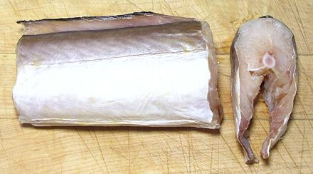
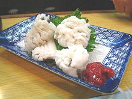

Pike Conger Eel

[Hamo (Japan); Daggertooth Pike Conger, Summer Eel; Ca Lat Cat Khuc (Viet);
Muraenesox cinereus]
While this Indo-West Pacific eel can grow to 7 feet, it is commonly about
3 feet long. Though it is very expensive to prepare and bland in taste,
hamo is very popular around Kyoto, Japan. In ancient times it was one of
very few fish tough enough to survive a multi-day journey to the inland
capital. It is shot full of bones and cannot be de-boned, so Kyoto sushi
chefs use special techniques. It is also used to make fish cakes and
imitation crab, uses where the bones can be strained out. The photo
specimens, from Vietnam, were about 2 inches thick by 2-1/2 inches
high. This fish has no scales so is not kosher.
More on Eels.

Buying: Probably you don't want to. In any case, you're
not going to find this fish fresh or live in North America, but segments
can occasionally be found in the frozen food cases of Asian markets here
in Los Angeles.
Cooking: This fish is always cooked, even served on
sushi rice. It is almost always seasoned because it is rather bland. In
Kyoto it is prepared many ways by sushi chefs, but always the price is
high. Note in the photo to the left, hamo is often puffy in appearance
due to the fine cutting in the preparation method (see below).
Photo by ayustety distributed under license Creative Commons
Attribution-Share Alike 2.0 Generic.
Preparation:
- You have to start with a live fish, so first you kill it. A formerly
frozen fish will be too mushy to work with.
- Next you split down the belly full length and remove the guts.
- With the head pegged to the cutting board to stabilize the fish, you
remove the backbone and spread it out into a double fillet, skin side
down.
- With a special heavy straight edged knife (hamo honegiri) you now cut
the fillet crosswise about 22 slices to the inch. You have to get very
close to the skin to cut through all the bones, but you must not cut
through the skin. This takes a lot of practice to do right, and it's
660 cuts for a 30 inch fish.
- Cut the fillet into pieces suitable to the way you will cook it.
- Discard the head and deep fry the backbone, which renders it edible.
OK, Lets be practical.
So, what did I do with the pound
of thawed fish after I took the photograph at the top of the page? As I
noted above, you can't prepare previously frozen fish as they do in
Kyoto, so, I did what any sane fish cook would do, the same as with dace
or featherback.
- I cut away the backbone and scraped all the flesh off the skin and
bones.
- I then picked out all the bones and spines I could find, scraping the
flesh off them with my fingers. That gave me 1/2 pound of flesh.
- I then chopped the flesh very fine to make a paste.
- Into the paste I massaged a tablespoon of fish sauce, a chopped
scallion, a little rice flour, an egg and a little salt.
- I made the paste up into patties and fried them. I ate them with
a vinegar dip. Pretty good, but more work than even for a featherback.
sf_pikcongz 120226 - www.clovegarden.com
©Andrew Grygus - agryg@clovegarden.com - Photos
on this page not otherwise credited © cg1
- Linking to and non-commercial use of this page permitted